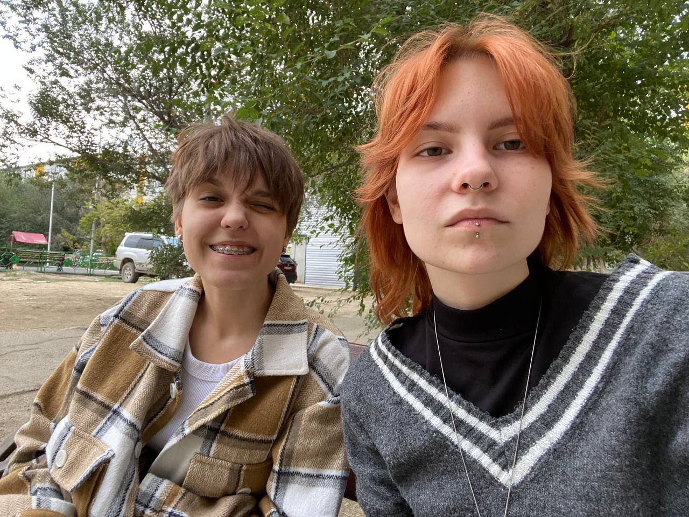

Эта песня у меня ассоциируется с тобой — с той дорогой к тебе и с той дорогой от тебя. Она заставляет меня вспоминать каждый миг, проведённый рядом с тобой. Я так сильно полюбила её, потому что в каждой ноте вижу нас. Эта песня именно про август, про тот самый наш август. Когда мы еще стеснялись друг друга, узнавали в мелочах и в забавных привычках. Мы разговаривали по душам, гуляли вечером по аллее, пили вместе какао, снимали тик токи, вели прямые эфиры, спали в обнимку, смотрели красную королеву и плакали под нее. Мы влюблялись друг в друга все сильнее. Тот август был таким же тёплым и прекрасным, как ты… как тот самый первый поцелуй, в котором я не могла пошевелиться из-за бабочек. Иногда мне кажется, что стоит включить эту песню — и я снова иду по знакомой дороге, чувствую лёгкий ветер, вспоминаю твой взгляд и то, как бьётся сердце, когда ты рядом. И пусть многое осталось позади, эти моменты навсегда останутся во мне — тёплым августом, который живёт где-то глубоко внутри. Я безумно сильно тебя люблю💗💗💗
